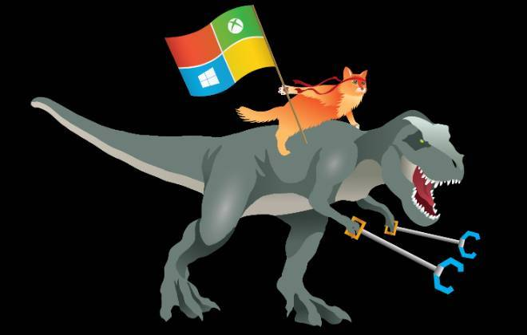

Bem-vindos ao Blog Tech!
Sua fonte de tutoriais e noticias e dicas do mundo tecnologico.
O Windows 10 automaticamente monitora a sua localização e o seu comportamento
para fins de marketing. Mas esta opção é facilmente desativada após entrar em configurações.
